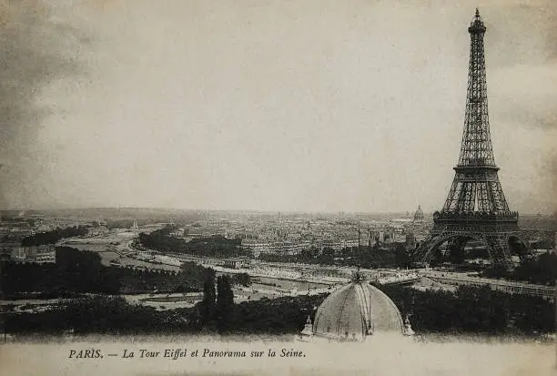
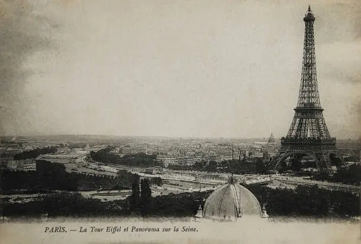
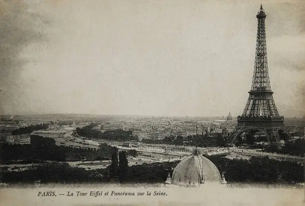
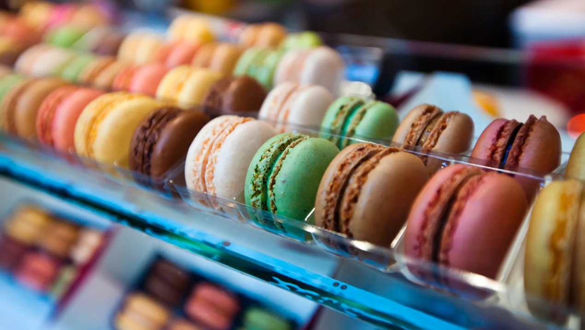
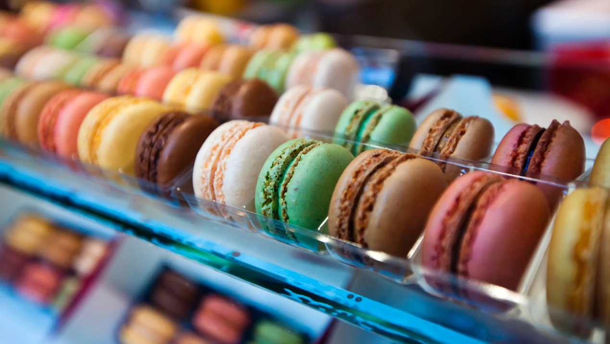
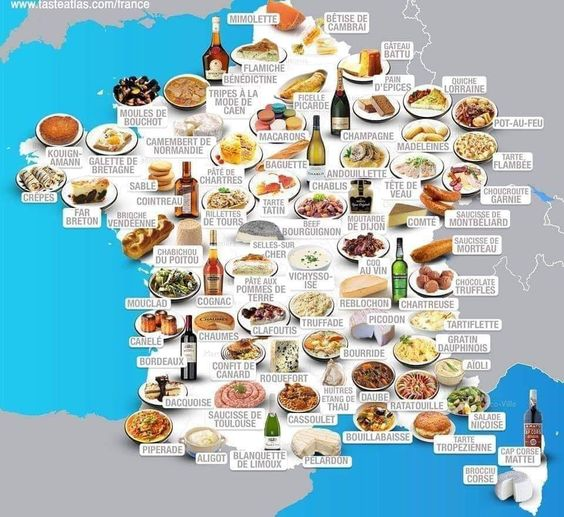
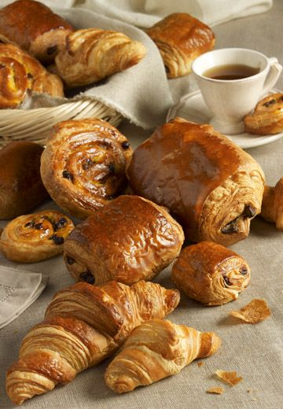
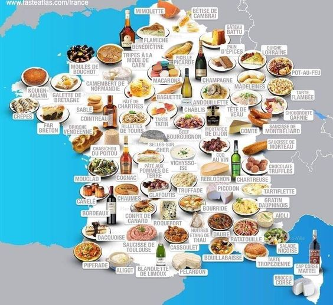
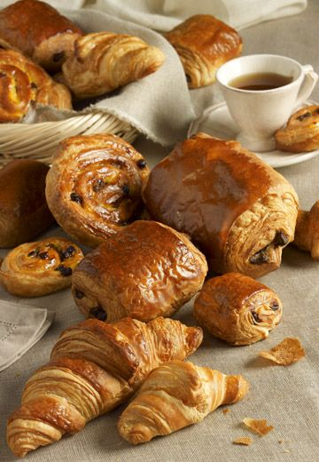

Descubre la historia, la cultura, los sabores y los lugares más impresionantes de este país fascinante.
La historia de Francia abarca desde la antigua Galia, conquistada por los romanos en el siglo I a.C., hasta la actual Quinta República. Tras la caída del Imperio Romano, surgieron los reinos merovingios y carolingios, con Carlomagno coronado emperador en el 800. La Edad Media vio la consolidación del poder bajo la dinastía Capeta y el enfrentamiento en la Guerra de los Cien Años contra Inglaterra. La revolución de 1789 transformó Francia de una monarquía absolutista a una república, seguida por el imperio napoleónico. En los siglos XIX y XX, Francia experimentó cambios políticos, incluyendo la Tercera República, y sufrió las devastaciones de dos guerras mundiales. Tras la Segunda Guerra Mundial, se estableció la Quinta República, la cual continúa en la actualidad, con Francia jugando un papel importante en la Unión Europea y en la política global.

Francia es sinónimo de arte, moda, y cine. Desde el Louvre hasta el Festival de Cannes, la cultura francesa es icónica y es conocida por su riqueza y sofisticación. Francia ha producido grandes escritores como Victor Hugo y filósofos como René Descartes. En el cine, el país es famoso por su innovación y el Festival de Cannes. La gastronomía francesa, famosa por sus vinos, quesos, y repostería, es apreciada globalmente. París es un centro mundial de moda, hogar de casas de alta costura como Chanel y Dior. Además, la vida social francesa valora las reuniones en cafés y bistrós, mientras que festividades como el Día de la Bastilla reflejan su rica tradición cultural..

La gastronomía francesa es mundialmente reconocida por su refinamiento, variedad, y por ser una de las más influyentes en la historia culinaria. Es famosa no solo por su diversidad de platos y técnicas de cocina, sino también por su enfoque en la calidad de los ingredientes y la presentación. A lo largo de los siglos, ha desarrollado una profunda cultura gastronómica que va desde la comida casera hasta la alta cocina o "haute cuisine"x
 

 



Francia es un destino turístico de renombre mundial, conocido por su diversidad y belleza. París, la capital, atrae a visitantes con la Torre Eiffel, el Louvre y la Catedral de Notre-Dame. La región de la Riviera Francesa ofrece playas glamorosas y el Festival de Cine de Cannes. El Valle del Loira destaca por sus impresionantes castillos y viñedos. La región de Provenza es famosa por sus paisajes pintorescos y campos de lavanda, mientras que la región de Alsacia combina encanto medieval con vino y gastronomía. Los Alpes franceses son ideales para el esquí y las actividades al aire libre. Además, la gastronomía y los vinos franceses son una parte importante de la experiencia turística.


🇫🇷 ¿Quieres descubrir más sobre Francia? Contáctame en mis redes sociales para que te cuente como es la estancia en este país maravilloso, lleno de cultura, arquitectura, historia y gastronomia increíble!!